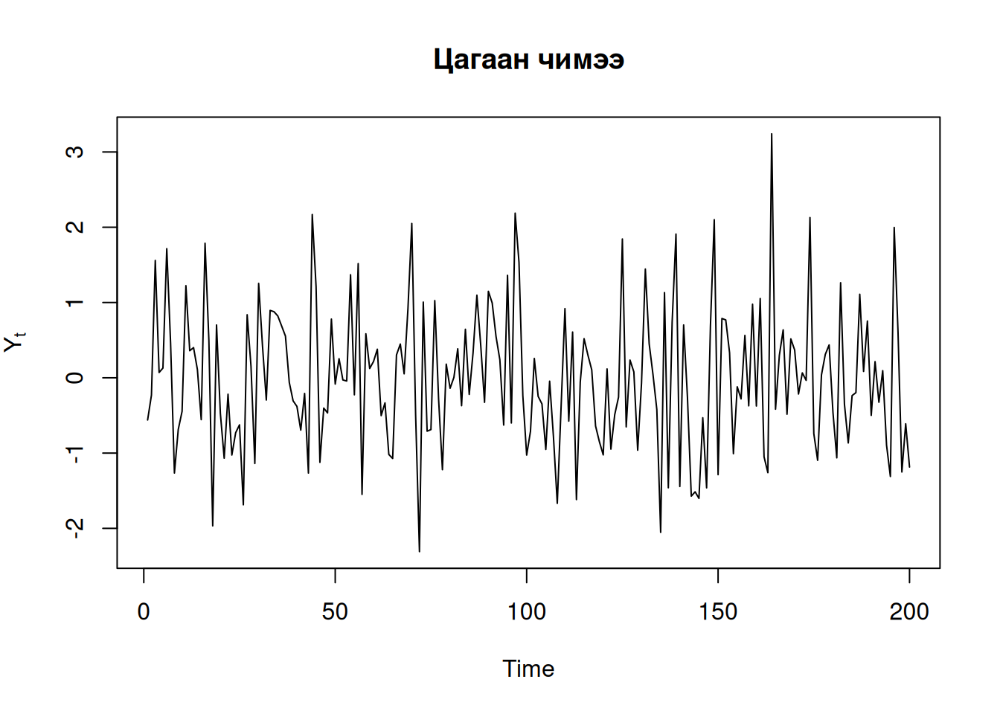
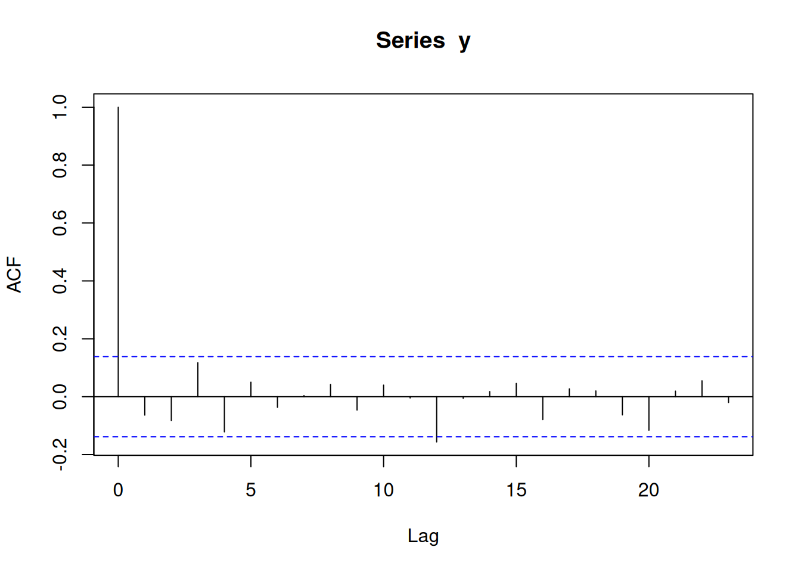

set.seed(123)
y <- rnorm(200)
plot.ts(
y,
main="Цагаан чимээ",
ylab=expression(Y[t])
)
Энэ бүлэгт 10-р бүлгийн дасгалуудаас сонгосон дасгалуудын бодолтыг үзүүлэв.
Уншигчдыг бодолтыг харахаасаа өмнө дасгал бүрийг бие даан бодохыг уриалж байна.
200 урттай цагаан чимээний цуваа үүсгэж, график зур.
set.seed(123)
y <- rnorm(200)
plot.ts(
y,
main="Цагаан чимээ",
ylab=expression(Y[t])
)
Цуваа нь тэг орчимд санамсаргүйгээр хэлбэлздэг.
Ямар ч тренд эсвэл улирлын байдал харагдахгүй.
Дисперс нь цаг хугацааны явцад ойролцоогоор тогтмол харагдаж байна.
Цагаан чимээний процессын ACF-ийг зур.
acf(y)
Цагаан чимээний хувьд
\[ \rho(k)=0, \qquad k>0. \]
Практикт түүврийн автокорреляцууд санамсаргүй түүврийн хэлбэлзлээс болж тэг орчимд хэлбэлздэг.
Ихэнх корреляцууд 95% итгэлцлийн хязгаар дотор байх ёстой.
Процесс бүрийн хувьд стационар эсэхийг тодорхойл.
\[ Y_t=\varepsilon_t \]
Стационар.
Энэ нь цагаан чимээний процесс юм.
\[ Y_t=t+\varepsilon_t \]
Стационар бус.
Дундаж нь цаг хугацааны явцад өөрчлөгддөг:
\[ E(Y_t)=t. \]
\[ Y_t=0.5Y_{t-1}+\varepsilon_t \]
Стационар.
Учир нь
\[ |0.5|<1. \]
\[ Y_t=Y_{t-1}+\varepsilon_t \]
Стационар бус.
Энэ нь санамсаргүй алхалт юм.
Дараахьыг өгөгдсөн гэж үзье:
\[ \rho(k)=0.8^k. \]
Ол:
\[ \rho(1), \quad \rho(2), \quad \rho(3). \]
\[ \rho(1)=0.8 \]
\[ \rho(2)=0.8^2=0.64 \]
\[ \rho(3)=0.8^3=0.512 \]
\[ \rho(1)=0.8, \qquad \rho(2)=0.64, \qquad \rho(3)=0.512. \]
ACF ба PACF-ийн ялгаа юу вэ?
ACF нь
\[ Y_t \]
ба
\[ Y_{t-k} \]
хоорондын нийт шугаман хамаарлыг хэмждэг.
PACF нь завсрын ажиглалтуудын нөлөөг арилгасны дараа
\[ Y_t \]
ба
\[ Y_{t-k} \]
хоорондын шууд хамаарлыг хэмждэг.
AR(1) процессын хувьд:
Дараахьыг авч үзье:
\[ Y_t=0.6Y_{t-1}+\varepsilon_t. \]
Дараахьыг өгөгдсөн гэж үз:
\[ \sigma^2=1. \]
Дундаж ба дисперсийг ол.
Стационар AR(1) процессын хувьд
\[ E(Y_t)=0. \]
\[ Var(Y_t) = \frac{\sigma^2} {1-\phi^2} = \frac{1} {1-0.36}. \]
Иймд
\[ Var(Y_t) = \frac{1}{0.64} = 1.5625. \]
\[ E(Y_t)=0 \]
\[ Var(Y_t)=1.5625. \]
Дараахьын хувьд
\[ \theta=0.5, \]
тооцоол:
\[ \rho(1). \]
\[ \rho(1) = \frac{\theta} {1+\theta^2} = \frac{0.5} {1.25} = 0.4. \]
\[ \rho(1)=0.4. \]
Дараахьын хувьд
\[ \theta=0.2, \]
1 хоцролтын автокорреляцыг тооцоол.
\[ \rho(1) = \frac{0.2} {1+0.04} = \frac{0.2} {1.04} = 0.1923. \]
\[ \rho(1)\approx0.1923. \]
MA(1) процесс яагаад
\[ \rho(k)=0, \qquad k>1 \]
байдаг вэ?
Загвар нь
\[ Y_t = \varepsilon_t + \theta\varepsilon_{t-1}. \]
Нэгээс илүү хугацааны нэгжээр тусгаарлагдсан ажиглалтууд ямар ч нийтлэг алдааны гишүүн хуваалцдаггүй.
Цагаан чимээний дараалал корреляцгүй тул
\[ Cov(Y_t,Y_{t-k})=0 \]
нь
\[ k>1 \]
-ийн хувьд биелнэ.
Иймд
\[ \rho(k)=0. \]
AR(1), MA(1), ARMA(1,1)-ийн ялгааг бич.
\[ Y_t = \phi Y_{t-1} + \varepsilon_t. \]
Шинж чанар:
\[ Y_t = \varepsilon_t + \theta\varepsilon_{t-1}. \]
Шинж чанар:
\[ Y_t = \phi Y_{t-1} + \varepsilon_t + \theta\varepsilon_{t-1}. \]
Шинж чанар:
ARIMA(1,1,1) гэж юу гэсэн үг вэ?
ARIMA(1,1,1) загвар нь дараахь зүйлийг агуулна:
Математикаар
\[ (1-\phi B)(1-B)Y_t = (1+\theta B)\varepsilon_t. \]
Ялгавар авах алхам нь стационар бус байдлыг арилгахад ашиглагддаг.
Тодорхойл:
\[ MAE, \quad MSE, \quad RMSE. \]
\[ MAE = \frac1n \sum |e_t|. \]
Дундаж абсолют алдааг хэмждэг.
\[ MSE = \frac1n \sum e_t^2. \]
Том алдаануудыг илүү хүндээр шийтгэдэг.
\[ RMSE = \sqrt{MSE}. \]
Анхны өгөгдөлтэй ижил нэгжтэй байдаг.
Үлдэгдэл яагаад цагаан чимээтэй төстэй байх ёстой вэ?
Сайн хугацааны цувааны загвар нь өгөгдөлд байгаа бүх системтэй бүтцийг тайлбарлах ёстой.
Хэрэв үлдэгдэлд автокорреляц үлдсэн бол ашигтай мэдээлэл тайлбарлагдаагүй үлдсэн гэсэн үг.
Сайн тохируулсан загвар нь дараахь шинж чанартай үлдэгдэл гаргадаг:
Иймд үлдэгдлийн цуваа цагаан чимээтэй төстэй байх ёстой.
Уншигчдыг үлдсэн дасгалуудыг бие даан гүйцэтгэхийг уриалж байна.
Хугацааны цувааны шинжилгээг сурах хамгийн сайн арга бол:
Онол ба тооцоолол хоёуланг нь давтан дадлага хийх нь эзэмшихэд зайлшгүй шаардлагатай.